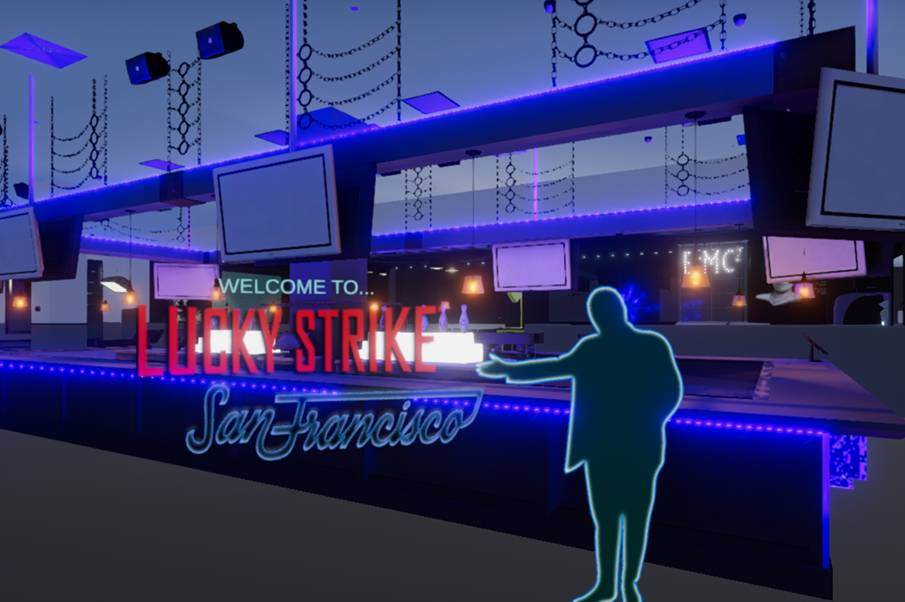

Site Created By Chris Petsche ~ 2021 All rights reserved.

A virtual experience created to provide a double means of:
visually pitching redesign and update suggestions for various Lucky Strike Social locations,
presenting potential offsite clients with a way of seeing the venue without actually visiting.
A project intented to assist a company I loved working for with their journey into the future!!!

After completing grad school my goal was to create my own studio and use what I had shared in my thesis that earned my masters degree as the foundation for doing so. While playing with a few concepts and trying to settle on my first project since I was free of the 2 year crunch on my thesis, the assistant general manager at my day job knew I could model and built environments during my schooling and came to me with a request.
The company was going through several changes at the time, and even though I was not part of management, they always welcomed my ideas and treated me as if I were one of the management team. Naturally, when you love someone or something you become passionate about making the world around that love better. The people at Lucky Strike were like an extended part of my family. So when the AGM came asking for ideas on how to pretty up a particularly ugly wall and try to make it a focal point rather than an eye sore, I dove in head over heals.
Redesigning a single wall quickly turned into redesigning an adjacent room. A room grew to the entire venue. And soon, it blew up into a multi-purpose virtual tour.
The count before stopping the project was at 250 models that had been created. Ranging from the large structural pieces down to the salt and pepper shakers, everything in the venue was meticulously measure to within 1/8th of an inch of being perfectly accurate. Then, for the more detailed creations, 2 versions were produced and textured to suit both the VR close-up and distant views, as well as a reduced scale version for the WebGL portion of the project.
The design here seemed straight forward to me. The wall ran parallel to the walls that gave the bowling section of its length, and faced the same as the backdrop gave the lanes their visual appeal. Extending that theme the rest of the way down the wall connected the once very separate areas. The black and white x pattern played in well with the white floors of the Einstein Room that had black highlights in it, and made the Control Desk part of both as it should have been from the beginning.
Even though the request to redesign the step and repeat wall was technically what started the project, it was being able to redesign a room that was named after one of my personal historic heros that shoved it toward what it ended up being. Every Lucky Strike venue at the time had its own theme to it. And Albert Einstein was a part of San Franciscos.
The orignal design of the room was very plain and only had a single mural on a single despite the whole room being named after him. And it really didn't show the genius that his work obviously was. So I set out to display his life on all the surfaces that would hold something worth admiring for a while, including the ceiling.
The ceiling was largest canvas to try displaying the geniuses work in as much detail as possible. And like most designs, sketching things old and playing with ideas is usually the best way to start.
Though, using Photoshop also makes a great way to quickly put something together to run ideas up the chain before implementing them into 3D. Crafting simple proposals from doctored pictures helped convey several visual ideas, as well as functional ones. One of my positions at Lucky Strike labled me as being a mechanic. Which meant I not only fixed the bowling lanes, but also maintained the venue as a whole.
This position gave me a perspective that allowed for many levels of reasoning behind the designs that were proposed, and the ability to build them in both a virtual space and out here in the real-real. Resulting in nearly every one being approved. Most of what held back the remodeling aspects of the project was time, and of course money.
???
???
???
???